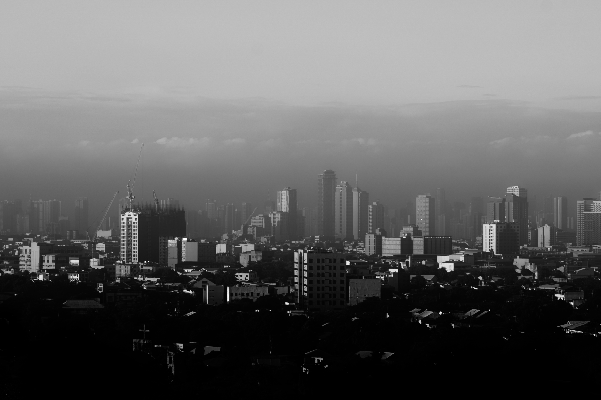

Photographed by the author
Scientist by training, engineer by trade, photographer by eye.
Joven Paolo Angeles — PhD candidate in Materials Science at the University of the Philippines and Senior AI Engineer at DOST-ASTI, Quezon City.
scroll
About
Optimization is the through-line — in the lab, in production, in the frame.
My doctorate develops a Bayesian optimization framework that accelerates nanoparticle synthesis — fewer experiments, lower cost, more reproducible materials research. At DOST-ASTI I lead the engineering of retrieval-augmented, multi-agent AI platforms used by real government stakeholders.
The rest of the time: an ML-driven trading home lab, a 3D printing studio called PRINT3D.MNL, generative art, and a camera that has won at the International Photography Awards.
- CurrentlySenior AI Engineer, DOST-ASTI
- DoctoratePhD candidate, Materials Science, UP
- ThesisBayesian optimization for nanoparticle synthesis
- Based inQuezon City, Philippines
- Conference papers16 — PH, Taiwan, Japan
Selected work
From government AI platforms to lab tools.
drag or scroll sideways —

Multi-agent AI · DOST PROPEL
JuanaKNOW
Market intelligence and technology assessment for Filipino innovators — novelty evaluation, funding access, commercialization guidance.
Ask JuanaKNOW

Multilingual NLIDB · DOST-ASTI
iTANONG
Query government data in Filipino, English, or Taglish through a natural-language interface to databases.
Learn about iTANONG

Lab tool · open source
XRD Analyzer
Interactive X-ray diffraction analysis — upload XY/CSV files, highlight peaks, characterize faster.
Launch analyzer

RAG tooling · Hugging Face
ChunkingExpress
A document-chunking playground for RAG pipelines with configurable strategies and live previews.
Try the RAG tool

Utility · TypeScript
PH WFH Optimizer
Combines official Philippine holidays with leave credits to surface the most efficient long weekends.
Plan long weekends

Algorithms · for fun
Puzzle-a-Day Solver
Algorithm X enumerating daily tilings of the DragonFjord A-Puzzle-A-Day board, with visual proofs.
Solve today's puzzle
Research path
A decade in materials, now teaching machines to run the lab.
2025 — now
DOST-ASTI
2025
DOST-ASTI
2023
UP Diliman
2022
Japan
2014 — 22
UP system
Photography
The same eye, a different instrument.
First place and category winner at the International Photography Awards 2018, shortlisted at Siena 2020, exhibited at the Singapore International Photography Festival.



Series: landscapes · street · infrared · astro · minimalism
Recognition
Medals from two disciplines.
Academic
ASTHRDP-NSC PhD Scholar — current
Department of Science and Technology · 2024–present, full tuition with stipend
ASTHRDP-NSC MS Scholar
Department of Science and Technology · 2018–2020
University Scholar — four semesters
University of the Philippines · GWA ≥ 1.45
College Scholar — three semesters
University of the Philippines · GWA ≥ 1.75
Photography
International Photography Awards 2018 — 2× first place
"Icarus" — 1st & category winner, Sports · "Swan Lake" — 1st, Nature-Seasons · "A Roof in Hong Kong" — 2nd, Architecture
International Photography Awards 2019
Two third places (Special Effects; Architecture-Interior) and an honorable mention in Fine Art
Siena International Photo Awards 2020
Shortlisted
Singapore International Photography Festival 2018
Depth of Feel exhibit · DECK, Singapore